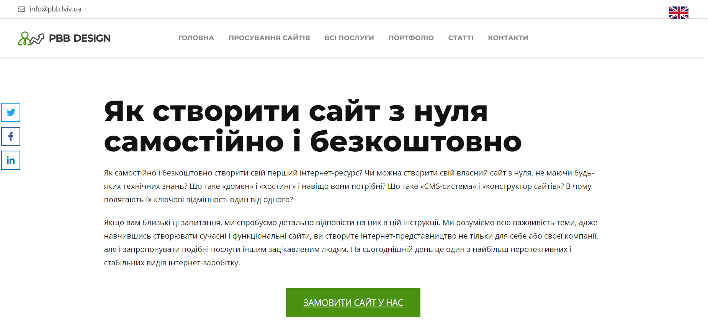

PBB DESIGN
Інформаційний вебсайт, що предстваляє інформацію про процес створення вебсайтів. Чітко структурований на розділи, вміст кожної сторінки дотриманий структурі. Головним призначенням сайту є пояснення процесу створення вебсторінки для подальшого формування пропозиції зі створення вебсайтів від цієї компанії "під ключ".
